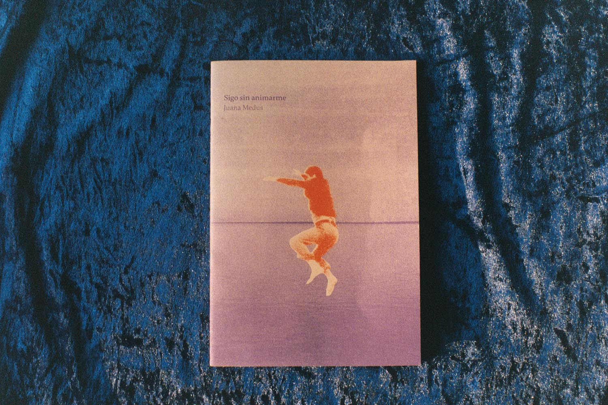
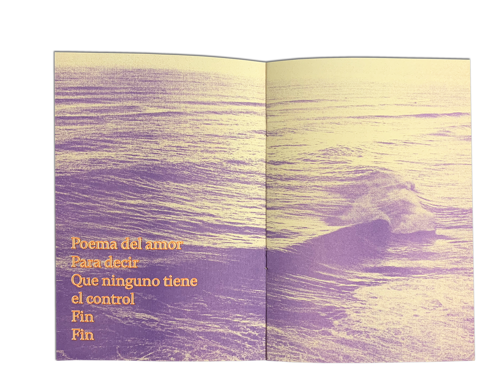
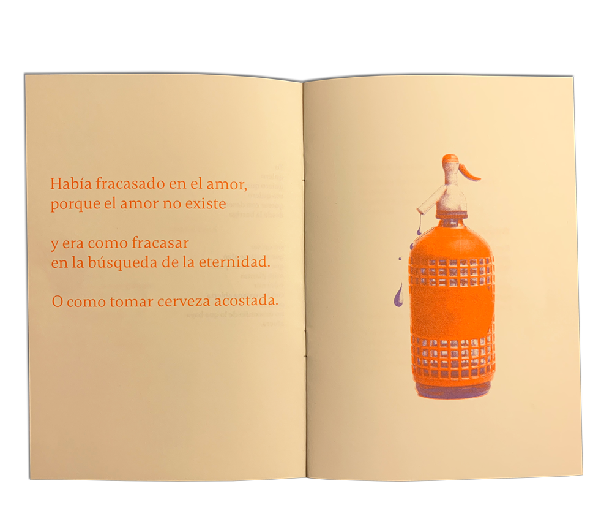
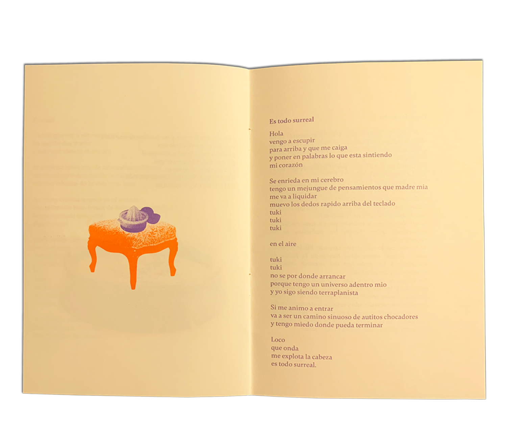
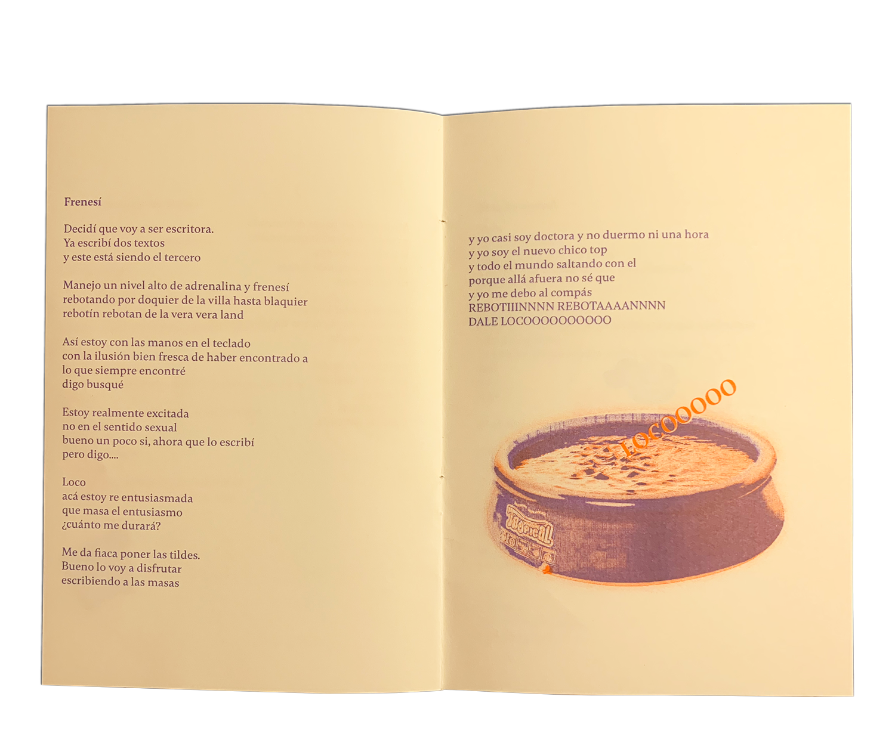
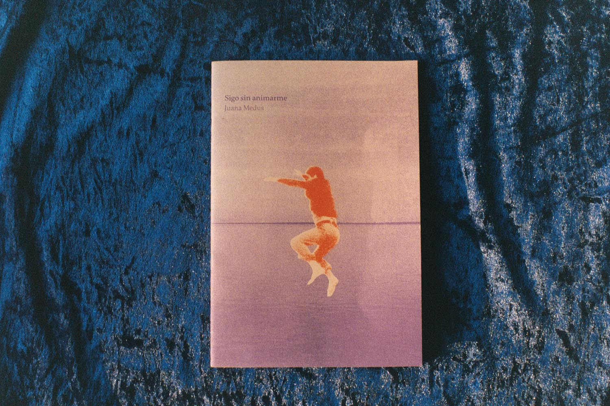
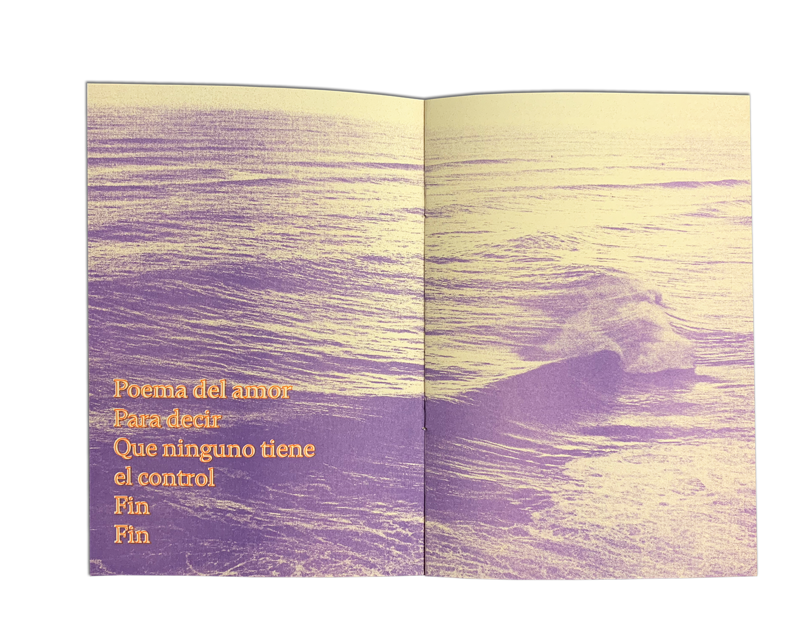
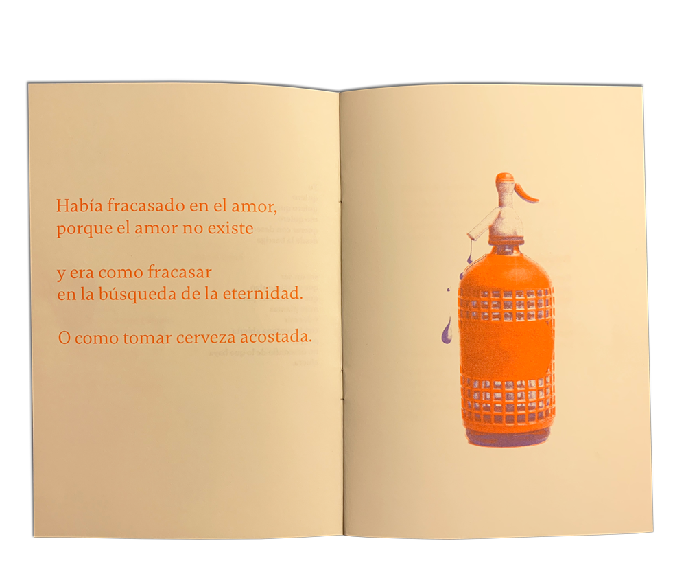
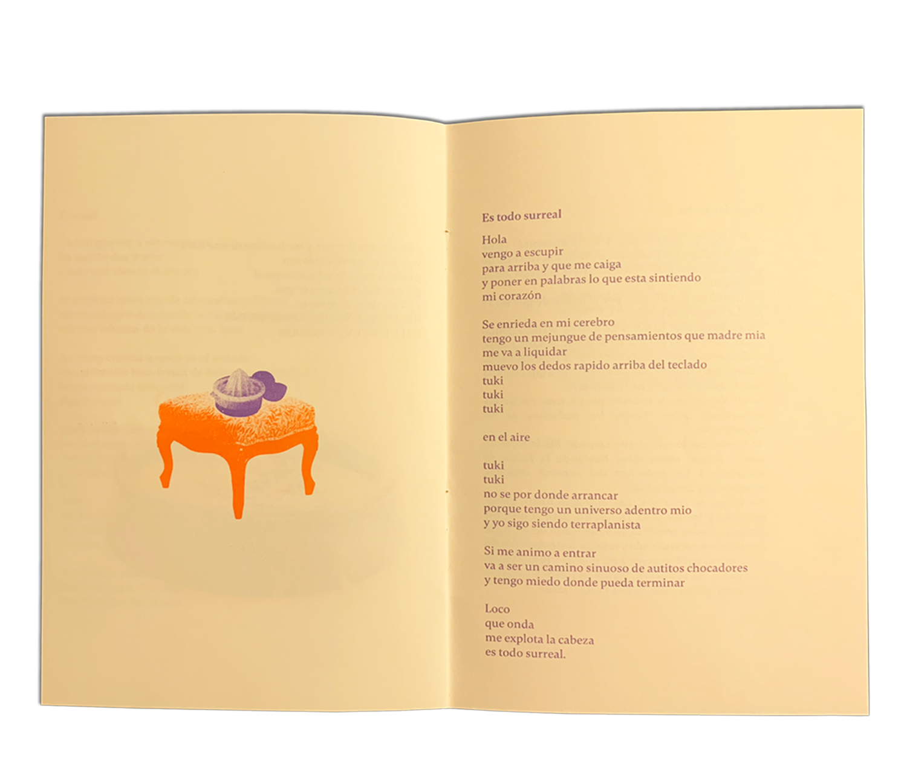
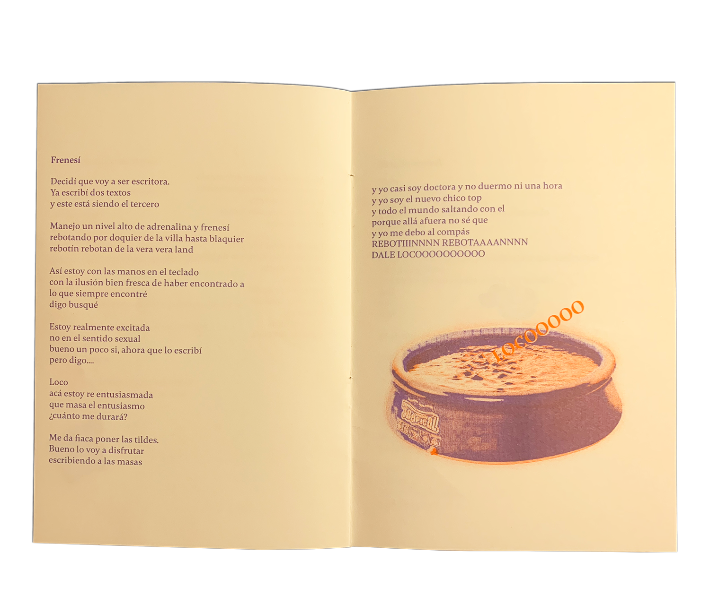

Sigo sin animarme forma parte de una serie de fanzines de escritorxs que publican por primera vez. Se trata de hacer evidente la energía de los textos a través de la imagen en risografía que no oculta sus imperfecciones.